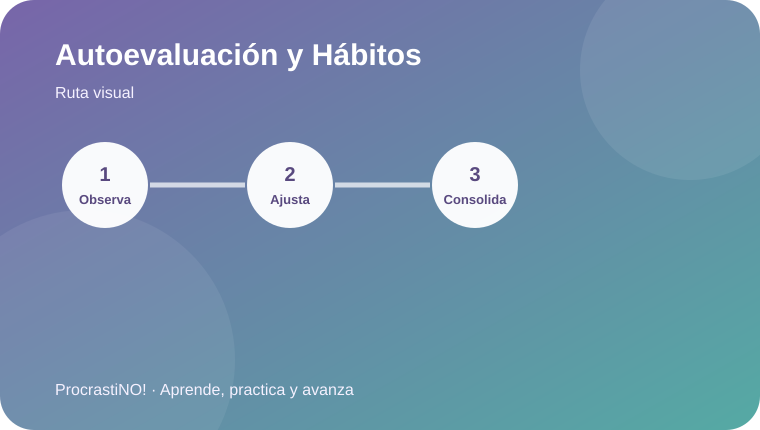
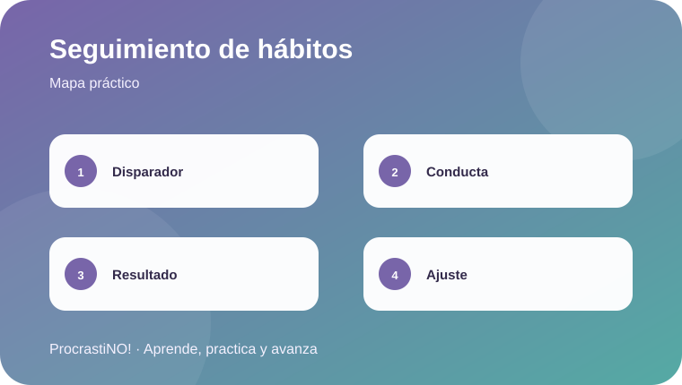
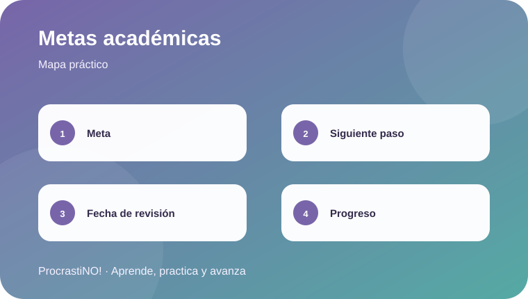

5.1 / 5.1
Autoevaluación y seguimiento
Observa disparadores, conductas y resultados para ajustar estrategias de estudio.
Evalúa tus hábitos, registra tu progreso y establece objetivos académicos a largo plazo.

Observa disparadores, conductas y resultados para ajustar estrategias de estudio.
Convierte una meta amplia en un próximo paso concreto y una fecha de revisión.


Observa el esquema antes de comenzar las actividades.
Completa la experiencia y marca la pantalla como terminada.
Tu avance se refleja automáticamente en la ruta de aprendizaje.